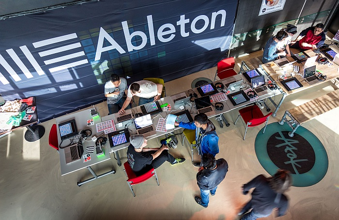
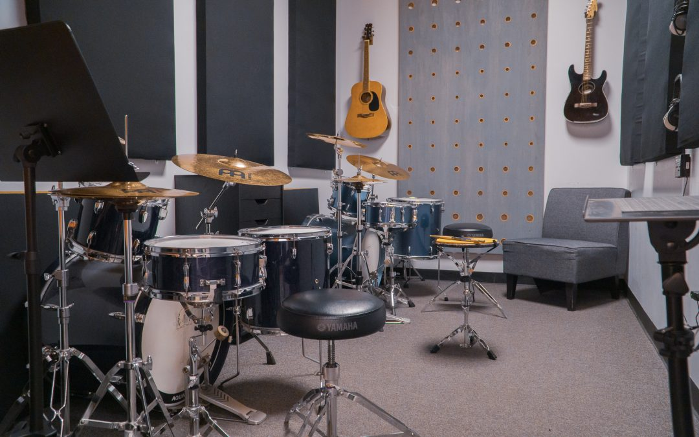

Présentation
L'American Music School of Toulouse est une des meilleures écoles de musique en France et dans le monde.
L'AMST est située en plein centre de Toulouse, et propose des formations variées et centrées sur le thème de la musique, à partir du BAC et allant jusqu'au BAC +5, en passant par des bachelors et de l'alternance.
L'école fut fondée en 2018 par notre directeur actuel, Thomas Bangalter, membre du duo mondialement connu Daft Punk. Il a voulu avec cette école proposer un projet se démarquant de ce qui existe actuellement en Europe.
Il s'est donc inspiré du système de bachelor américain pour proposer aux étudiants une composition plus libre de leurs disciplines. Les diplômes de l'école sont donc reconnus en Europe et aux Etats-Unis.
Notre équipe pédagogique est constituée de beaucoup de professeurs musiciens et d'experts réputés dans le monde musical, mais aussi d'artistes intervenants qui pourront accompagner les élèves au long de leurs études, et valorisant le nom de l'école auprès des employeurs.
L'école propose des salles de studios, des salles de musique, des locations d'instruments et dispose d'un partenariat avec le Conservatoire à rayonnement régional de Toulouse, pour encourager la pratique musicale des élèves.
L'AMST fut créée pour combler aux inconvénients pratiques, matériels et l'imprécision des autres formations musicales, et c'est pour cela qu'elle excelle auprès des élèves et des employeurs.
Pourquoi choisir l'AMST ?
Un programme flexible
Grâce à notre inspiration du schéma du Bachelor américain, nous fonctionnons avec un système de point, des majeurs et des mineurs.
En conséquence, vous pourrez composer votre cursus avec de nombreux choix de disciplines, qui vous apporterons des points pour valider vos semestres.
Enfin une école qui propose tant de liberté!
·
Formation
Une immersion totale
Grâce à nos nombreux dispositifs et cours, vous pourrez vous immerger dans la pratique instrumentale, la composition, la théorie et l'histoire de la musique, travailler sur des projets, et vous faire des connaissances !
L'AMST a tout pour vous permettre de connaître au mieux votre domaine.
·
Campus
Une expérience enrichissante
Grâce à nos professeurs, qui sont pour la plupart des artistes, et grâce aux nombreuses interventions d'artistes de partout dans le monde aisi que nos conférences, vous pourrez enrichir votre culture et vos expériences musicales.
Les travaux en groupe vous permettront également de partager votre créativité et passion avec d'autres élèves.
·
Equipe
Entreprises
Talent Exceptionnel
Nos élèves sont formés par des experts de la musique reconnus dans le monde. Ils possèdent un talent musical exceptionnel, une maîtrise technique et une créativité sans limites. En recrutant nos élèves, vous enrichirez votre entreprise avec des esprits innovants et passionnés.


Esprit d'équipe et leadership
Nos élèves apprennent non seulement à exceller en solo, mais aussi à travailler en harmonie au sein d'un groupe. Ils ont été formés pour être des leaders dans leur domaine, capables de prendre des initiatives et de motiver leurs collègues. Recruter nos élèves signifie investir dans des leaders potentiels qui peuvent stimuler la productivité et l'innovation au sein de votre entreprise.
Formation Complète
À l'AMST, nous ne nous contentons pas d'enseigner la musique. Nous préparons nos élèves à être polyvalents, capables de s'adapter à diverses situations professionnelles. Ils sont formés en production musicale, gestion de projet et marketing musical. En les recrutant, vous bénéficiez d'une force de travail compétente et prête à relever tous les défis.